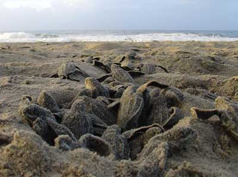
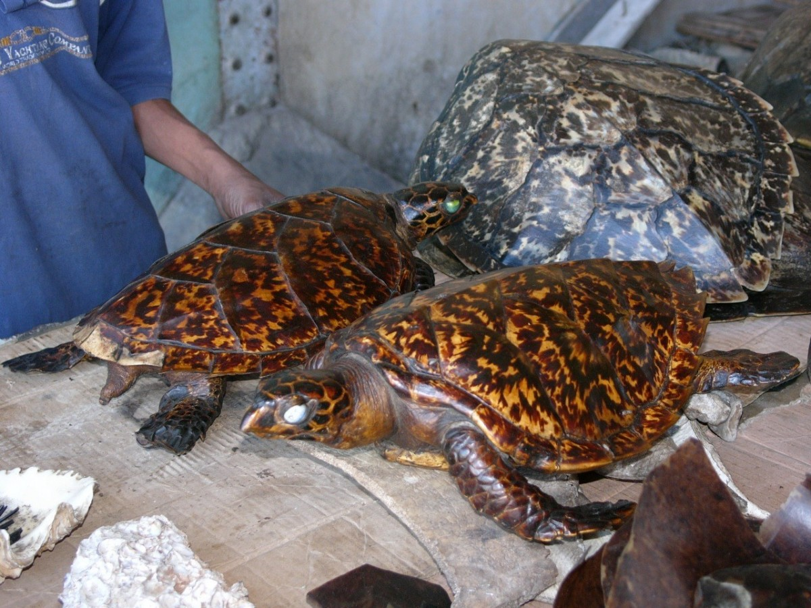

Theats To Turtles
Habitat loss, pollution and illegal harvesting are the main threats to turtles these day.
Habitat Loss
One of the biggest threats to turtles is the loss and degradation of their natural habitats.
Preventions:
- Implement turtle habitat preservation and restoration programs through land-use planning, wildlife reserves, and protected areas.
- Implement and uphold environmental laws to reduce pollution and habitat degradation.
- Promoting sustainable practices in logging, farming, and urban planning.
Pollution

Aquatic creatures, including turtles, face significant harm from pollution from dumping and transportation.
Preventions:
- Proper waste management to reduce the release of pollutants into water bodies
- Promoting eco-friendly behavior and using non-toxic, biodegradable items.
Illegal Harvesting
Hunters kill turtles illegally for flesh, shells, and skin, causing significant harm to endangered species.
Preventions:
- Governments should outlaw turtle capture, sale, and possession
- Educate public on turtle protection, illegal harvesting, ecological importance.
- Regular turtle monitoring helps law enforcement identify high-risk areas.
For more information about kosgoda hatchery, Click here: Kosgoda
For more information about Bentota hatchery, Click here: Bentota